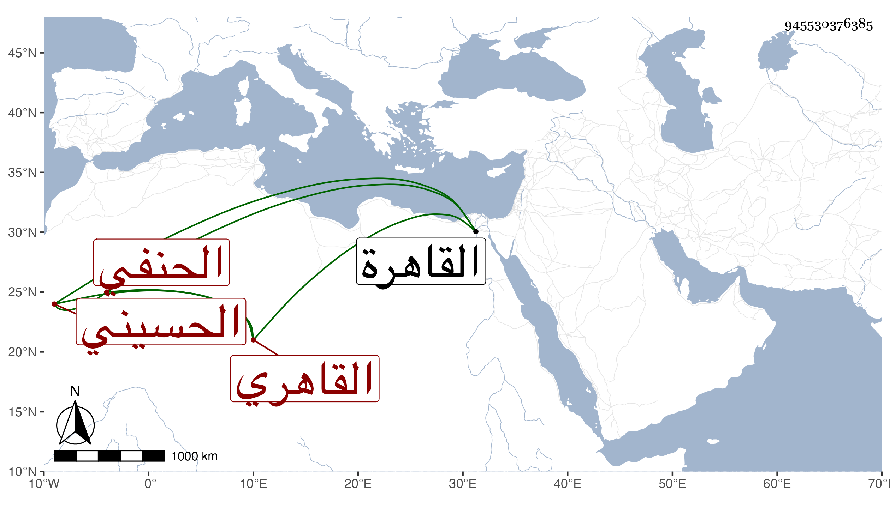

0902Sakhawi.DawLamic.ITO20230111-ara1.EIS1600.945530376385
Biography ID: 945530376385
165
عبد الله بن محمد بن أحمد بن إسماعيل بن داود الجمال أبو محمد بن الشمس بن الشهاب بن المجد أبى الفداء القاهري الحسيني الحنفي أخو أحمد وعبد الرحمن وعبد اللطيف والتقي محمد والصدر محمد المذكورين في محالهم وهو كبيرهم ويعرف كأبيه بابن الرومي . ولد قبيل التسعين وسبعمائة بالقاهرة ونشأ بها فحفظ القرآن وكتبا واشتغل بالفقه والعربية والفرائض وغيرها على جماعة كالشمس محمد بن أحمد السعودي أخذ عنه الفقه والشهاب أحمد بن شاور العاملي أخذ عنه الفرائض والحساب والوصايا والصدر سليمان الأبشيطي قرأ عليه ألفية ابن مالك وشرحها لابن عقيل وبرع وأذنوا له كلهم وعظموه جدا وثبتت عدالته في ذي القعدة سنة ثمان وثمانين على قاضي الحنفية حينئذ الشمس الطرابلسي وشهد عليه بذلك غير واحد من الأعيان ، وسمع على الآمدي وابن الشيخة والمطرز والمجد إسماعيل الحنفي والجمال الرشيدي في آخرين ، وناب في القضاء قديما على رأس القرن عن الجمال يوسف بن موسى الملطي فمن بعده ثم أعرض عنه فأشير عليه بالعود لتضعضع حاله بالترك ففعل ولم يحصل على طائل وكذا درس قديما في عدة أماكن ثم رغب عنها إلا التدريس بجامع الظاهر وحدث بأخرة سمع منه الفضلاء قرأت عليه أشياء وكان أصيلا قديم الفضيلة من أعيان مذهبه ومتقدمي نوابهم لكن لم نلقه إلا بعد كبره وخموده وفاقته وضعف نهوضه . مات فى صفر سنة إحدى وستين وقد قارب المائة رحمه الله .
